These six photographs show everyday scenes around my neighbourhood. Each image uses a different composition technique. I made small edits to help the viewer notice the main subject while keeping the photos natural.
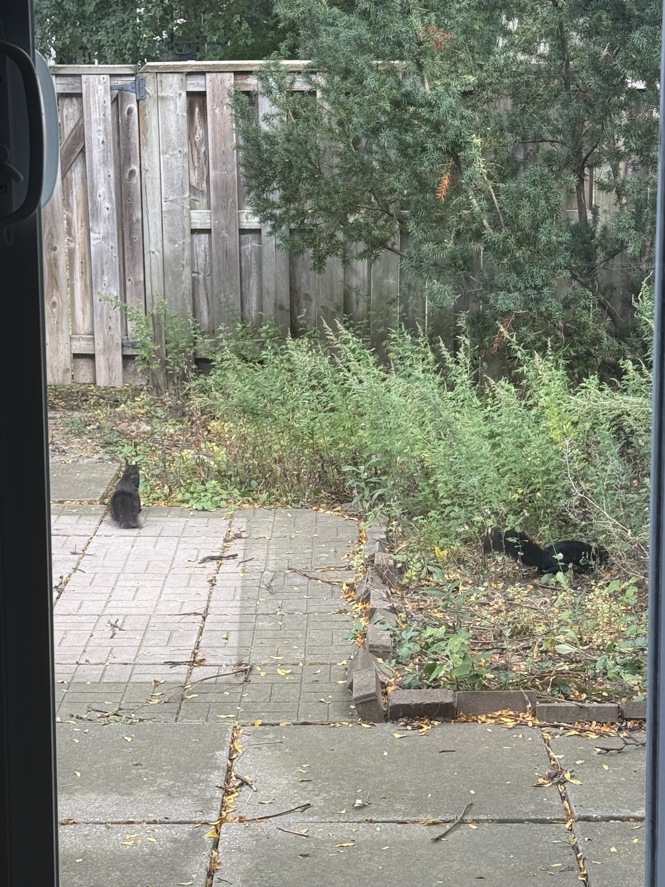
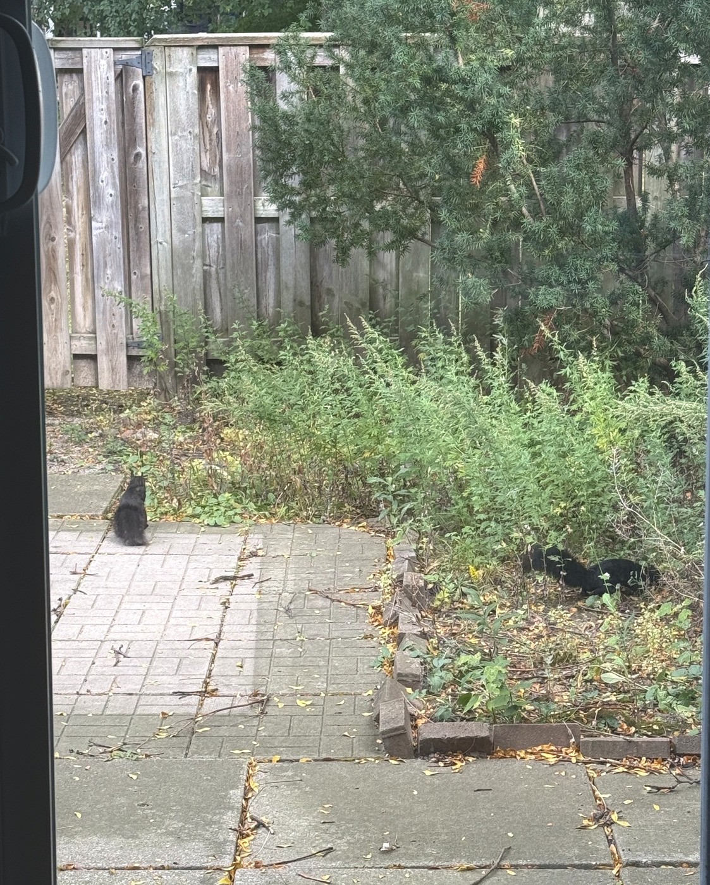
The doorway frames the backyard and directs attention to two black cats. I cropped some pavement and brightened the shadows so the cats are easier to see.
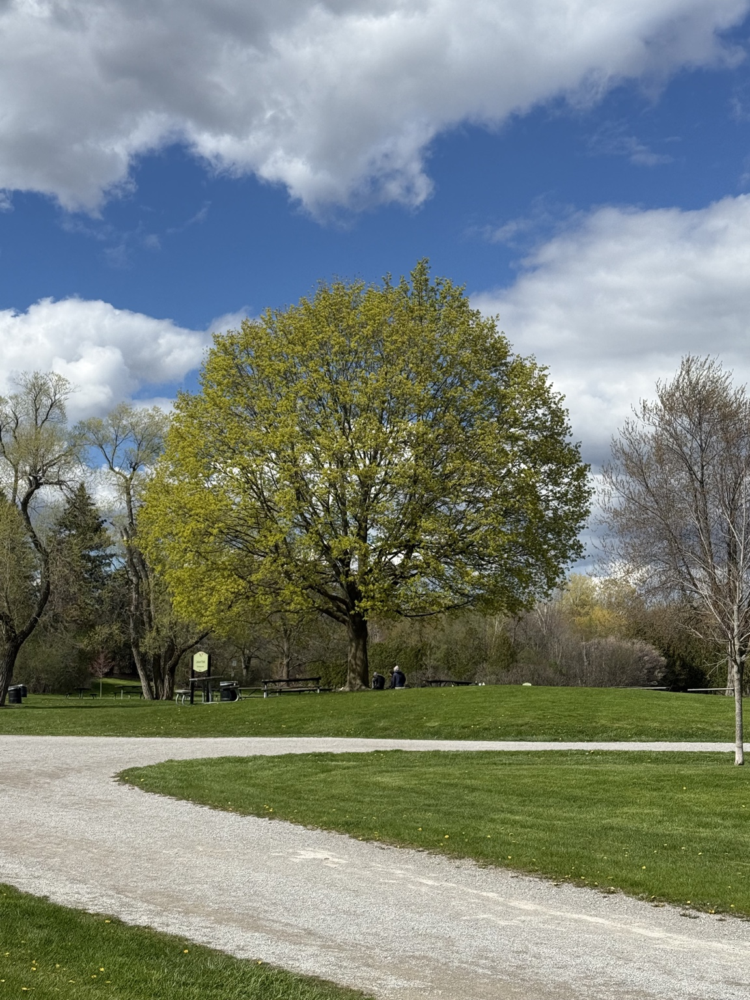
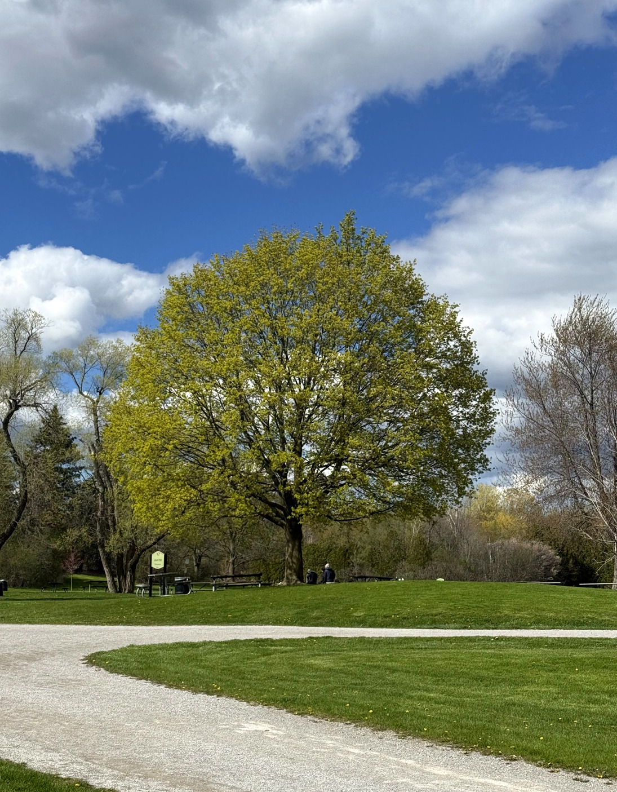
The tree is near the centre, and its branches balance both sides. I cropped some empty path and slightly strengthened the colours to make the park feel more inviting.
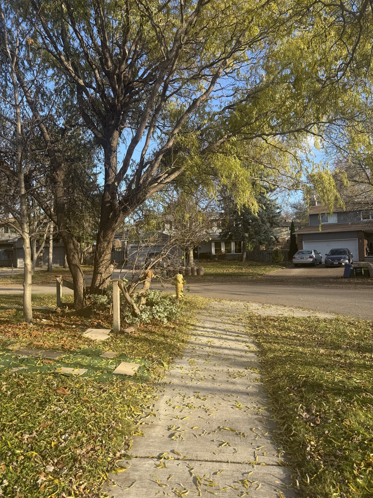
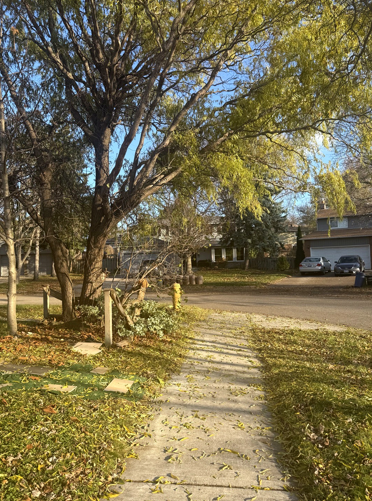
The sidewalk edges lead the viewer toward the street. I trimmed distracting edges, added a little warmth, and increased contrast to make the path stand out.
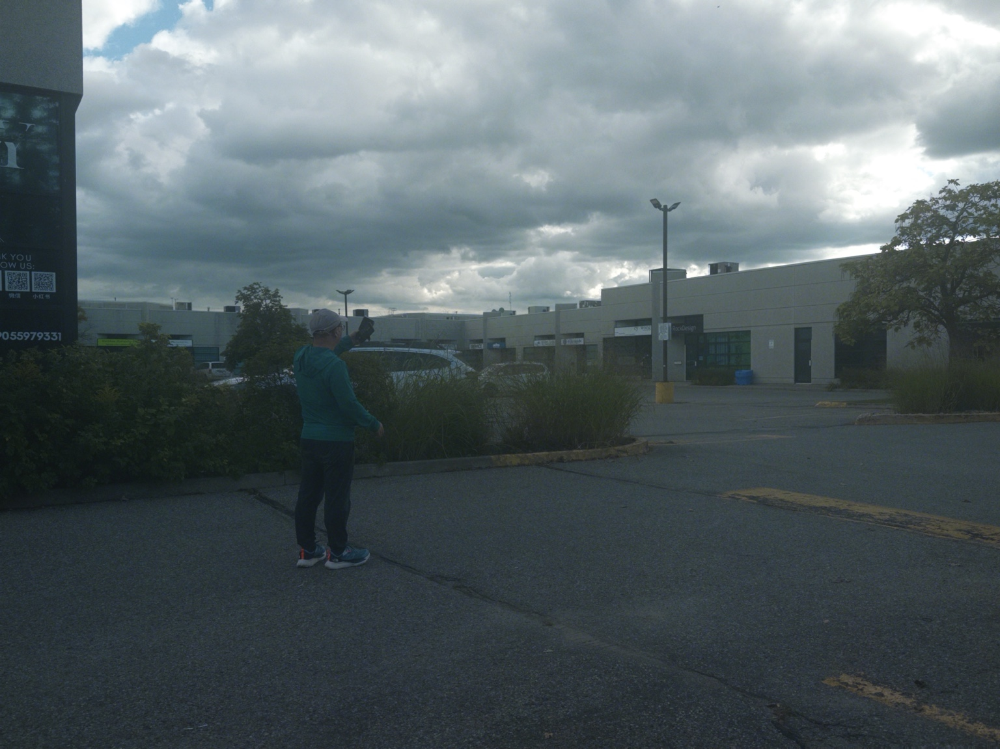
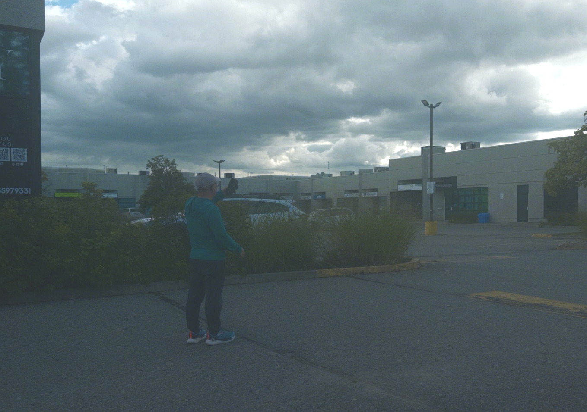
The person stands near the left third, leaving space for the street and sky. I brightened the shadows and cropped extra pavement to bring more attention to the person.
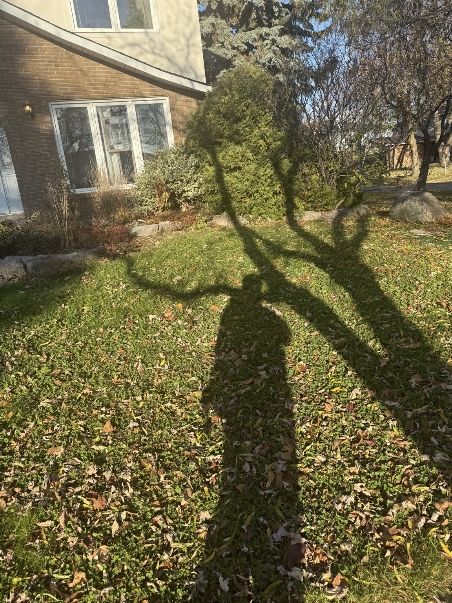
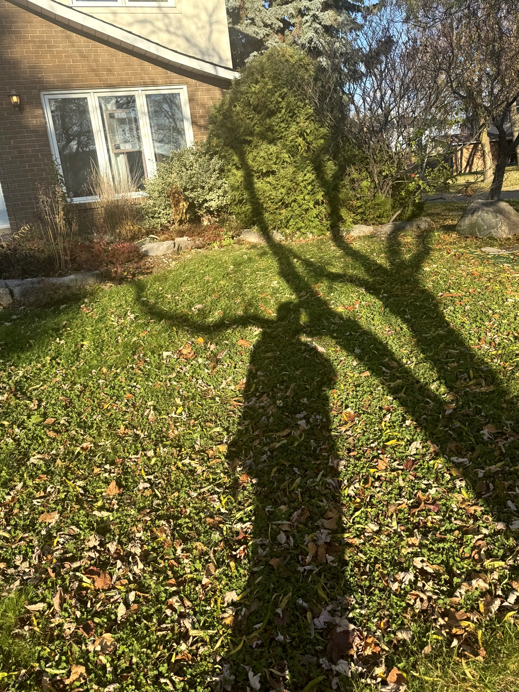
The dark tree shadow stands out against the bright grass. I cropped slightly and increased contrast to emphasize the shape of the shadow.
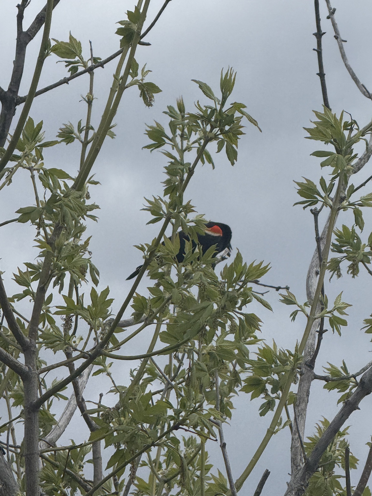
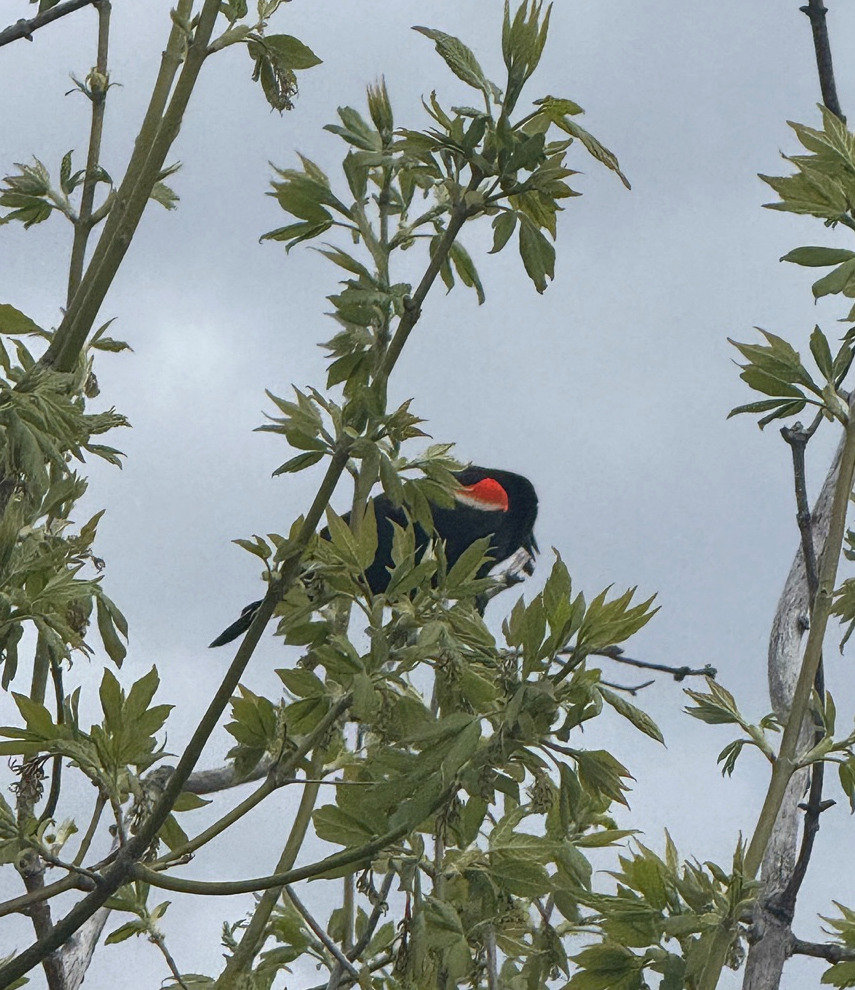
The bird's red patch stands out against its dark feathers and green leaves. I cropped closer and slightly enhanced the red so the bird becomes the focus.
I think the sidewalk photograph is my strongest image because its lines naturally guide the viewer toward the street. The fallen leaves and trees also make it feel like a familiar place. I cropped distracting edges, warmed the colours, and slightly increased the contrast. This made the path clearer without changing the original scene too much. The hardest photograph was the rule of thirds because I had to keep the person off-centre while making the rest of the photo look balanced. If I did this assignment again, I would try more angles and take photos earlier or later in the day to get better lighting. I also learned that careful framing while taking a photo can reduce the amount of editing needed afterward.